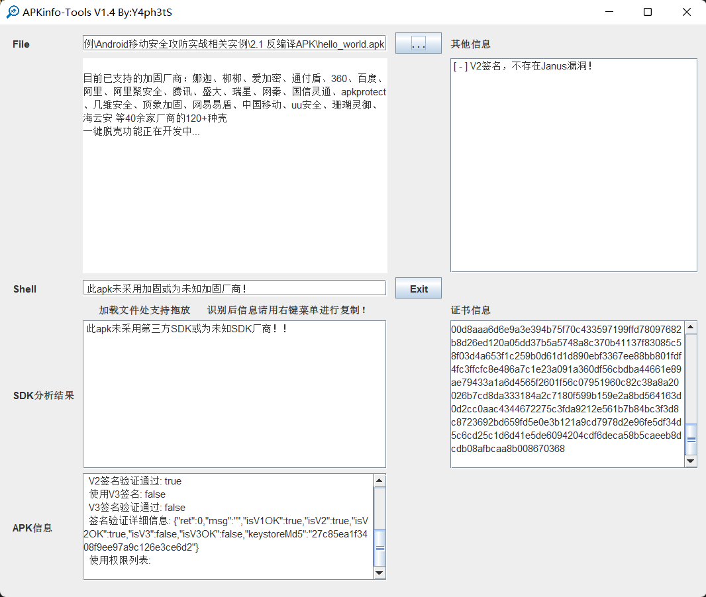
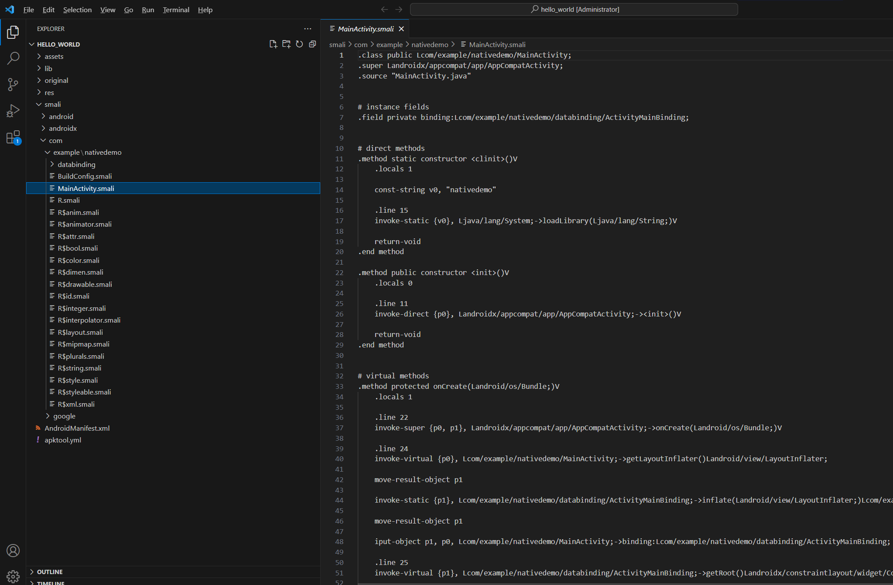
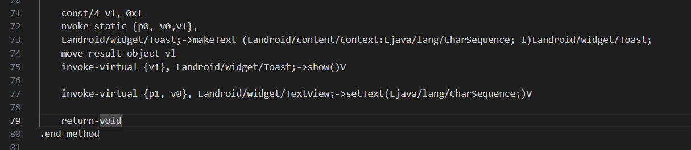
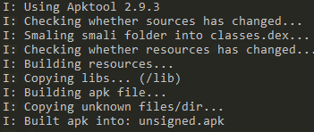
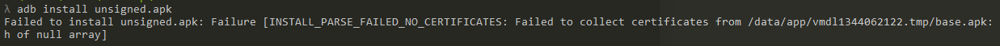
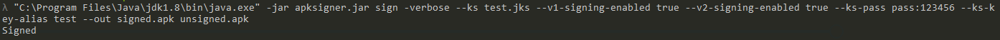
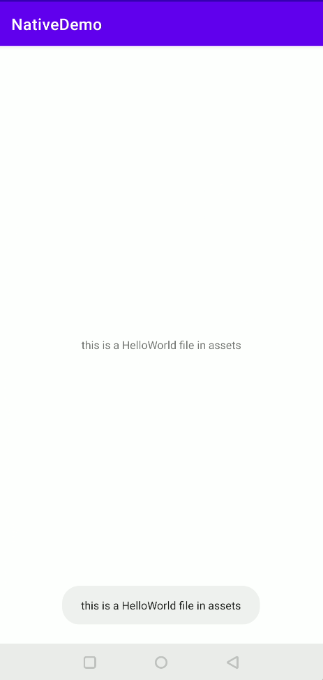
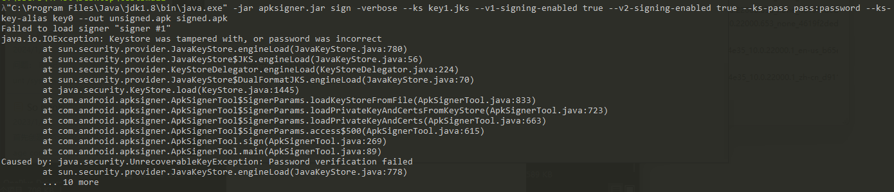
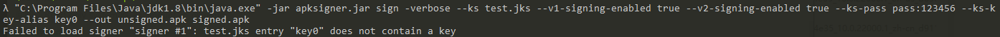
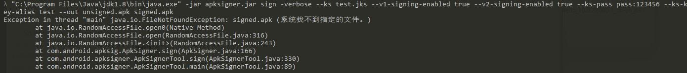

APK重打包与smali修改
本文所述的一切技术仅供网络安全研究学习之用，请勿用于任何的违法用途，否则由此所产生的一切后果自负！
APK重打包漏洞是安卓应用开发中一个较为常见的安全问题，主要是指攻击者通过反编译（Reverse Engineering）获取应用的源代码或资源文件，对其进行恶意修改（如嵌入恶意代码或广告模块）后重新打包并发布。这种行为会导致原应用的完整性和安全性被破坏，从而威胁用户和开发者的利益。
使用工具查壳

未加壳后用apktools进行反编译
java -jar apktool_2.9.3.jar d hello_world.apk
反编译后定位到主方法的smali

在smali中插入弹窗代码

使用apktool重新编译
java -jar apktool.jar b hello_world -o unsigned.apk

此时如果直接安装是无法成功的，因为APP未经过签名

使用命令进行签名，签名先需要先生成jks证书文件
keytool -genkeypair -v -keystore test.jks -storepass 123456 -keyalg RSA -keysize 2048 -validity 10000 -alias test
"C:\Program Files\Java\jdk1.8\bin\java.exe" -jar apksigner.jar sign -verbose --ks test.jks --v1-signing-enabled true --v2-signing-enabled true --ks-pass pass:123456 --ks-k ey-alias test --out signed.apk unsigned.apk

重打包后可以看到之前修改smali弹窗已经成功

常见问题解决：
\1. Failed to load signer “signer #1” java.io.IOException: Keystore was tampered with, or password was incorrect

重新生成证书，使用keytool版本和java版本保持一致
\2. Failed to load signer “signer #1”: test.jks entry “key0” does not contain a key

选择的别名需要和生成证书中的别名对应
3.Exception in thread “main” java.io.FileNotFoundException: signed.apk (系统找不到指定的文件。)

命令中out后先跟签名的apk文件名，再跟原文件名